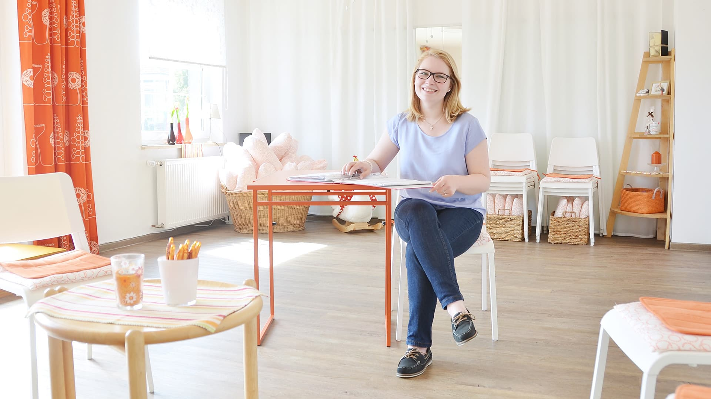

Hebamme in Rheine & Umgebung
Ruhige Hilfe
vor und nach
der Geburt.
Sicherheit, Orientierung und Entlastung für Schwangerschaft, Wochenbett und die erste Zeit als Familie.

Die Rieke Erfahrung
Die Rieke Erfahrung

Gerade rund um Schwangerschaft und Wochenbett prasseln viele Informationen, Meinungen und To-dos auf Familien ein. Meine Arbeit soll nicht noch mehr Lautstärke erzeugen, sondern Sicherheit, Einordnung und Ruhe geben.
Deshalb arbeite ich mit klaren Schritten, kleinen Gruppen und einem guten Blick auf den echten Alltag. So entsteht eine Begleitung, die weich wirkt, aber fachlich klar bleibt.
Leistungen
Welche Begleitung passt gerade zu deiner Phase?
Von den ersten Fragen in der Schwangerschaft bis zur Zeit nach der Geburt: Die Angebote greifen ineinander und bleiben bewusst klar aufgebaut.
Schwangerschaft
Vorsorge, Hilfe bei Beschwerden, Akupunktur, K-Taping und frühe Orientierung für die kommende Zeit.
Mehr erfahrenWochenbett
Hausbesuche, Stillbegleitung, medizinischer Blick und echte Entlastung in den ersten Wochen mit eurem Baby.
Zum WochenbettKurse
Geburtsvorbereitung, Rückbildung, Babymassage und Kanga mit Struktur, Wärme und genug Raum für Fragen.
Kursübersicht
Beratung
Stillen, Beikost, neue Rollen oder einfach das Gefühl, einmal sortieren zu wollen.
Nachricht schreibenSo arbeite ich
Fachlichkeit, die ruhig
bleibt.
Früher Kontakt hilft, weil wir so ohne Zeitdruck klären können, welche Betreuung sinnvoll ist, welche Termine realistisch sind und wo ich euch am besten unterstützen kann.
Schwangerschaft
Vorsorge und Orientierung von Anfang an
Wochenbett
Hausbesuche, Stillbegleitung und Nachsorge
Kurse & Beratung
Kleine Formate mit ruhigem Tempo

Stimmen von Eltern
Wie sich gute Begleitung anfühlen kann
★★★★★
Der Geburtsvorbereitungskurs bei Rieke hat mir viel Sicherheit gegeben. Danach hatte ich das Gefühl, wirklich vorbereitet zu sein.
★★★★★
Rieke nimmt sich Zeit, antwortet ruhig und hat eine Art, die direkt entlastet. Ich habe mich in mehreren Kursen sehr gut aufgehoben gefühlt.